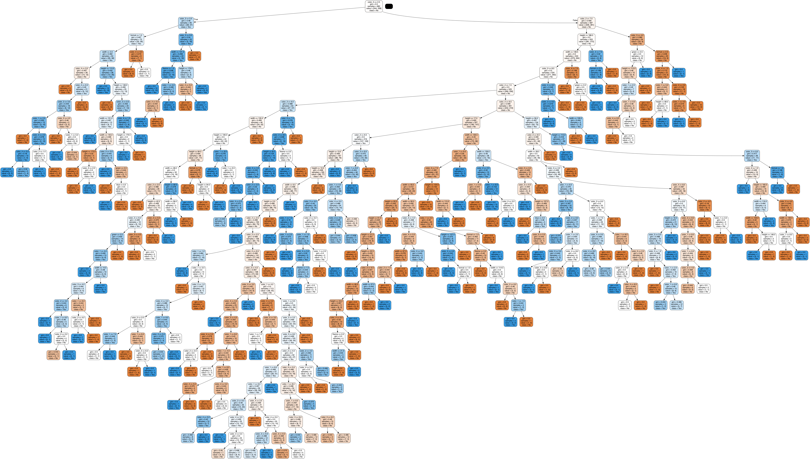

Gestion des recommandations#
Recuperation des données#
import json
import pandas as pd
import numpy as np
import os
from sklearn.preprocessing import LabelEncoder
import random
# Load the data
dir1 = "images"
dir2 = "ExifDatatest2.json"
dir = os.path.join(dir1, dir2)
data = pd.read_json(dir)
data['result'] = random.choices(["Yes", "No"], k=len(data))
print(data.head())
print(data.tail())
theme image width height format orientation \
0 Exoplanet 55_Cancri_b.jpg 1024 768 PNG no exif
1 Exoplanet Gliese_876_e.jpg 1587 919 PNG no exif
2 Exoplanet XO-3b.jpg 800 500 JPEG no exif
3 Exoplanet OGLE-2005-BLG-169Lb.jpg 1271 746 JPEG no exif
4 Exoplanet Kepler-242b.jpg 1980 1200 JPEG no exif
color_0 color_1 color_2 color_3 color_4 red green blue \
0 black darkgrey darkgrey black black 0.15 0.15 0.15
1 darkgrey black darkgrey black grey 0.15 0.15 0.15
2 black red lightgrey brown darkgrey 0.15 0.15 0.15
3 black darkgrey grey darkgrey grey 0.15 0.15 0.15
4 brown black white darkgrey lightgrey 0.15 0.15 0.15
result
0 No
1 No
2 Yes
3 No
4 Yes
theme image width height format \
713 Voitures Ferrari_250_GT_Coupé_Pinin_Farina.jpg 5408 3472 JPEG
714 Voitures BMW_Mille_Miglia.jpg 1087 697 JPEG
715 Voitures Buick_Regal.jpg 4524 3385 JPEG
716 Voitures Fiat_Centoventi.jpg 2975 2000 JPEG
717 Voitures Buick_Velite_6.jpg 4032 3024 JPEG
orientation color_0 color_1 color_2 color_3 color_4 red \
713 1 darkgrey grey grey darkgrey lightgrey 0.5
714 no exif darkgrey lightgrey darkgrey black grey 0.5
715 1 black grey lightgrey darkgrey lightgrey 0.5
716 no exif darkgrey lightgrey grey white black 0.5
717 1 grey darkgrey grey lightgrey white 0.5
green blue result
713 0.5 0.5 No
714 0.5 0.5 No
715 0.5 0.5 Yes
716 0.5 0.5 No
717 0.5 0.5 Yes
Labelisation des données#
# on enleve les colonnes inutiles
data.drop('orientation', axis=1, inplace=True)
data.drop('image', axis=1, inplace=True)
data.tail()
| theme | width | height | format | color_0 | color_1 | color_2 | color_3 | color_4 | red | green | blue | result | |
|---|---|---|---|---|---|---|---|---|---|---|---|---|---|
| 713 | Voitures | 5408 | 3472 | JPEG | darkgrey | grey | grey | darkgrey | lightgrey | 0.5 | 0.5 | 0.5 | No |
| 714 | Voitures | 1087 | 697 | JPEG | darkgrey | lightgrey | darkgrey | black | grey | 0.5 | 0.5 | 0.5 | No |
| 715 | Voitures | 4524 | 3385 | JPEG | black | grey | lightgrey | darkgrey | lightgrey | 0.5 | 0.5 | 0.5 | Yes |
| 716 | Voitures | 2975 | 2000 | JPEG | darkgrey | lightgrey | grey | white | black | 0.5 | 0.5 | 0.5 | No |
| 717 | Voitures | 4032 | 3024 | JPEG | grey | darkgrey | grey | lightgrey | white | 0.5 | 0.5 | 0.5 | Yes |
# label encoder
themeLabel = LabelEncoder()
data['theme'] = themeLabel.fit_transform(data['theme'])
widthLabel = LabelEncoder()
data['width'] = widthLabel.fit_transform(data['width'])
heightLabel = LabelEncoder()
data['height'] = heightLabel.fit_transform(data['height'])
formatLabel = LabelEncoder()
data['format'] = formatLabel.fit_transform(data['format'])
color_0Label = LabelEncoder()
data['color_0'] = color_0Label.fit_transform(data['color_0'])
color_1Label = LabelEncoder()
data['color_1'] = color_1Label.fit_transform(data['color_1'])
color_2Label = LabelEncoder()
data['color_2'] = color_2Label.fit_transform(data['color_2'])
color_3Label = LabelEncoder()
data['color_3'] = color_3Label.fit_transform(data['color_3'])
color_4Label = LabelEncoder()
data['color_4'] = color_4Label.fit_transform(data['color_4'])
redLabel = LabelEncoder()
data['red'] = redLabel.fit_transform(data['red'])
greenLabel = LabelEncoder()
data['green'] = greenLabel.fit_transform(data['green'])
blueLabel = LabelEncoder()
data['blue'] = blueLabel.fit_transform(data['blue'])
resultLabel = LabelEncoder()
data['result'] = resultLabel.fit_transform(data['result'])
data.tail()
| theme | width | height | format | color_0 | color_1 | color_2 | color_3 | color_4 | red | green | blue | result | |
|---|---|---|---|---|---|---|---|---|---|---|---|---|---|
| 713 | 3 | 159 | 186 | 0 | 4 | 5 | 5 | 3 | 7 | 1 | 1 | 1 | 0 |
| 714 | 3 | 60 | 66 | 0 | 4 | 7 | 3 | 0 | 6 | 1 | 1 | 1 | 0 |
| 715 | 3 | 147 | 184 | 0 | 0 | 5 | 7 | 3 | 7 | 1 | 1 | 1 | 1 |
| 716 | 3 | 115 | 136 | 0 | 4 | 7 | 5 | 9 | 0 | 1 | 1 | 1 | 0 |
| 717 | 3 | 137 | 176 | 0 | 6 | 3 | 5 | 7 | 9 | 1 | 1 | 1 | 1 |
Utilisation d’un arbre de décision#
from sklearn import tree
dtc = tree.DecisionTreeClassifier()
pourcent = 0.95
data_tc = data.drop('result', axis=1).iloc[0:int(len(data)*pourcent)]
data_result = data['result'].iloc[0:int(len(data)*pourcent)]
dtc = dtc.fit(data_tc , data_result)
data_result.iloc[0:5]
0 0
1 0
2 1
3 0
4 1
Name: result, dtype: int64
On affiche l’arbre de decision#
import graphviz
import pydotplus
from IPython.display import Image, display
dot_data = tree.export_graphviz(dtc, out_file=None,
feature_names=data_tc.columns,
filled=True, rounded=True,
class_names =
resultLabel.inverse_transform(
pd.DataFrame(data_result).result.unique())
)
graph = graphviz.Source(dot_data)
pydot_graph = pydotplus.graph_from_dot_data(dot_data)
img = Image(pydot_graph.create_png())
display(img)
#pydot_graph.write_png('tree.png')

Prediction#
# avec la derniere image des voitures
prediction = dtc.predict(
[[
themeLabel.transform(["Pokemon2"])[0],
widthLabel.transform(["7786"])[0],
heightLabel.transform(["4380"])[0],
formatLabel.transform(["JPEG"])[0],
color_0Label.transform(["red"])[0],
color_1Label.transform(["grey"])[0],
color_2Label.transform(["blue"])[0],
color_3Label.transform(["darkgrey"])[0],
color_4Label.transform(["lightgrey"])[0],
redLabel.transform([0.5])[0],
greenLabel.transform([0.15])[0],
blueLabel.transform([0.5])[0]
]]
)
print(resultLabel.inverse_transform(prediction))
print(dtc.feature_importances_)
['Yes']
[0.0159527 0.14047897 0.17277867 0.04449679 0.08011296 0.13865226
0.13694315 0.11704093 0.1309258 0. 0.01410366 0.00851411]
/usr/local/lib/python3.10/site-packages/sklearn/base.py:420: UserWarning: X does not have valid feature names, but DecisionTreeClassifier was fitted with feature names
warnings.warn(